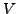
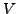

We study the simple heat equation
We solve the given setting on an adaptive Cartesian space-time grid
described by a  -spacetree.
-spacetree.
 -spacetrees are a generalisation of the well-known octree idea, and they
yield a multiscale space-time grid that naturally supports dynamic adaptivity.
Multiscale here implies coarsening both in space and time.
On this multiscale grid, we formulate a geometric multigrid full approximation
storage scheme with a simple adaptivity criterion, and solve the periodic,
time-dependent problem with a FMG cycle.
-spacetrees are a generalisation of the well-known octree idea, and they
yield a multiscale space-time grid that naturally supports dynamic adaptivity.
Multiscale here implies coarsening both in space and time.
On this multiscale grid, we formulate a geometric multigrid full approximation
storage scheme with a simple adaptivity criterion, and solve the periodic,
time-dependent problem with a FMG cycle.
An implicit Euler for the time derivative is one building block of this FMG.
It yields one elliptic subproblem per time slice.
We tackle the elliptic problem with a standard Jacobi solver acting as pre-
and postsmoother.
For the two-grid algorithm, we apply the standard geometric coarsening for both
time and space, while the restriction operator acts solely spatially.
Only every  th time slice is studied on the coarser grid at all.
The remaining fine grid time slices are neglected.
With such a restriction operator acting solely spatially,
the coarse grid correction part of the coarse grid equation equals the
standard Poisson equation's coarse grid formulation.
Throughout the prolongation of the coarse grid correction, we prolongate the
correction both to the finer grid in space and to the time slices ``sorted
out'' by the time coarsening, i.e. updates on coarser time slices affect time
slices stemming from a finer time discretisation.
The -cycle underlying our FMG cycle finally results from recursion.
th time slice is studied on the coarser grid at all.
The remaining fine grid time slices are neglected.
With such a restriction operator acting solely spatially,
the coarse grid correction part of the coarse grid equation equals the
standard Poisson equation's coarse grid formulation.
Throughout the prolongation of the coarse grid correction, we prolongate the
correction both to the finer grid in space and to the time slices ``sorted
out'' by the time coarsening, i.e. updates on coarser time slices affect time
slices stemming from a finer time discretisation.
The -cycle underlying our FMG cycle finally results from recursion.
Our spacetree storage scheme comes along with a small memory footprint and, thus, allows us to hold the complete space-time discretisation of our simulation. Our multigrid algorithm benefits this in several ways:
The overall project is a first step towards a computational fluid dynamics code for incompressible fluids that simulates scenarios with periodic pressure boundary conditions applied to tube-like geometries. For such settings, it often is an obvious idea to restrict the solver to one small chunk of this tube and to prescribe periodic boundary conditions. The exact inflow and outflow conditions then result from a computation similar to the setting above.